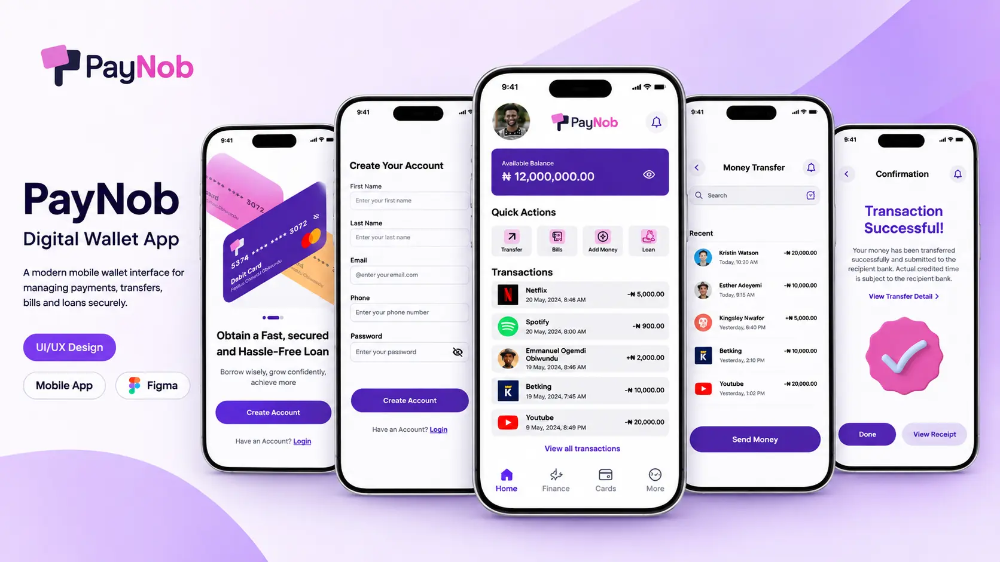

01 · Mobile application
PayNob
Digital wallet interface design exploring account onboarding, payment management and money transfer experiences.

Design focus
The screens cover the initial onboarding experience, account creation, login, wallet overview, transaction history and money transfer steps.